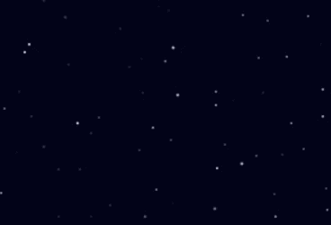

Pejibaye Blog
Pejibaye Blog
How to create a starry sky using HTML5 canvas - Part 2
This is part of a series! Please make sure you have read Part 1 first!
IMPORTANT -- you can try out the result of this tutorial by visiting this CodeSandbox. However, I encourage you to read the blog post and try to follow along to understand how and why it works.
Last time we left off with a very nice starry sky, but it's a bit dead. We need to add some animation to it! The way animation is done on HTML5 canvas is by drawing something else every frame.
For our case, we can use the requestAnimationFrame() function to call our render() function.
First, we will add a counter variable. We will increment this every time we draw.
This is useful because we will have a number that will change with every render.
let counter = 0;
Then, we will update our render() function so it uses requestAnimationFrame(). We will also make it increment the counter.
function render() { ctx.fillStyle = backgroundColor; ctx.fillRect(0, 0, width, height); stars.forEach(function(star) { const x = star.x; const y = star.y; const r = star.r; fillCircle(ctx, x, y, r, "rgb(255, 255, 255)"); }); counter++; requestAnimationFrame(render); }
For now, this will look exactly the same as before, because we always render the same thing. But let's begin to change that now.
We'll make a small change to make the stars look like they're flickering.
First, let's add a function to generate an opacity value. This value will go from 0 to 1 and will determine the opacity of our star.
The use of Math.sin() in the function below is just to make sure we get a value that changes smoothly.
const minStarOpacity = 0.1; const maxStarOpacity = 0.7; function getOpacity(factor) { const opacityIncrement = (maxStarOpacity - minStarOpacity) * Math.abs(Math.sin(factor)); const opacity = minStarOpacity + opacityIncrement; return opacity; }
Then, we will use this function when rendering our stars.
Also notice how we change the color from rgb(255, 255, 255) to rgba(255, 255, 255, opacity).
function render() { ctx.fillStyle = backgroundColor; ctx.fillRect(0, 0, width, height); stars.forEach(function(star, i) { const factor = counter * i; // factor will be a different number for every star const x = star.x; const y = star.y; const opacity = getOpacity(factor); fillCircle(ctx, x, y, star.r, `rgba(255, 255, 255, ${opacity}`); }); counter++; requestAnimationFrame(render); }

Now the sky is looking really nice and animated. But it's still missing a nice big moon. Let's add it next.
We will create a function to render our moon, and call it from render().
const moon = { color: "#fea", x: height / 3, y: width / 3, r: 40 }; function renderMoon(ctx, blur) { fillCircle(ctx, moon.x, moon.y, moon.r, moon.color); // render a smaller circle above the moon to give it that well-known moon-shape fillCircle( ctx, moon.x - moon.r / 3, moon.y - moon.r / 3, moon.r, backgroundColor ); }
And our updated render() function:
function render() { ctx.fillStyle = backgroundColor; ctx.fillRect(0, 0, width, height); stars.forEach(function(star, i) { const factor = counter * i; const x = star.x; const y = star.y; const opacity = getOpacity(factor); fillCircle(ctx, x, y, star.r, `rgba(255, 255, 255, ${opacity}`); }); renderMoon(ctx); counter++; requestAnimationFrame(render); }
That leaves us with the finished product:
Thanks for following this tutorial to the end! Remember you can look at a working example in the CodeSandbox.
Have fun experimenting and tweaking the values used to render the stars and the moon. Some ideas you may want to try to learn more and improve your skills:
- Make the stars more colorful.
- Make the moon move across the sky.
- Add shooting stars.
- Add a gradient background instead of a solid color.
- Add multiple moons.
Don't hesitate to contact me at @KaeruCT if you have any questions, suggestions, or improvements for this tutorial!
Comments
Comments powered by Disqus